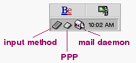
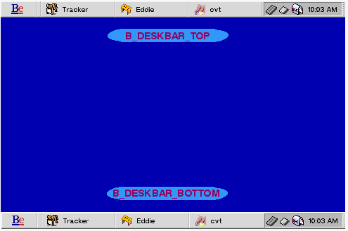
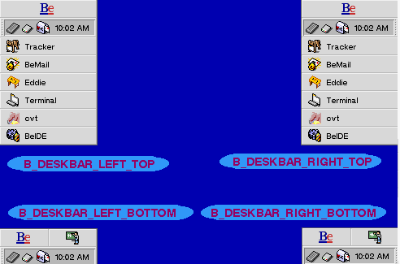
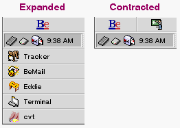

|
You don't need a be_app object to create and use a BDeskbar.
|
| Be Book Table of Contents | Deskbar Index |
Derived from: (none)
Declared in: be/be_apps/Deskbar/Deskbar.h
Library: libbe.so
Allocation: Constructor or on the stack
BDeskbar lets you query for the Deskbar's location, orientation (expanded or contracted), and frame, and lets you add and remove items from the shelf. The class lets you expand/contract the Deskbar and move it to one of the pre-defined locations, but it doesn't let you remove or hide the Deskbar, nor does it let you replace it with a UI object of your own.
|
|
The constructor creates and returns a new BDeskbar object. The destructor destroys it.
|
|
The Deskbar contains a shelf that contains replicants (archivable BViews). Typically, these replicants monitor or control some service. For example, the BeOS provides shelf items that monitor and control the input method mechanism, PPP, and the mail daemon (the date/time view is not a shelf replicant):

AddItem() puts a new item on the Deskbar's shelf. view, the BView that will be displayed on the shelf, must be archivable (see BArchivable). An item on the shelf is identified by name and an integer id. The name is that of the view itself (i.e., as assigned in the BView constructor); the id is generated by the Deskbar and is guaranteed to be unique. id, if supplied, is set to the added item's unique id number.
You can also add an item to the Deskbar by passing an entry_ref, addon, to the Deskbar add-on to place there.
RemoveItem() removes the shelf item identified by name or id.
CountItems() returns the number of items currently on the shelf (keep in mind that it doesn't count the date/time view).
HasItem() returns true if the Deskbar shelf contains the item identified by name or id.
GetItemInfo() points *found_name to the name of the item identified by for_id, or sets found_id of the item identified by for_name.
|
RETURN CODES
B_OK. The request to add, remove, or get info on the item was successfully communicated to the Deskbar. Note that this doesn't mean that the function actually did what it was supposed to do.
|
Returns the Deskbar's frame in screen coordinates.
|
Location() returns a symbolic description of the Deskbar's current location; see deskbar_location for the list of pre-defined locations. isExpanded (if supplied) is set to true if the Deskbar is expanded, and false if it's contracted; IsExpanded() returns the expansion value directly. Expansion and contraction is variable only if the Deskbar's location is left-top or right-top; for all other locations, the expansion state is hard-wired. See deskbar_location for illustrations.
SetLocation() sets the Deskbar's location and expands/contracts the Deskbar; for some locations, the expansion/contraction is hard-wired. Expand() expands/contracts the Deskbar (if the setting isn't hard-wired) without setting its location. You should very rarely need to call these functions. Moving and expanding the Deskbar is in the user's domain.
RETURN CODES
SetLocation() and Expand() return...
|
The deskbar_location constants are used to set and return the Deskbar's location (see Location()). The six locations are shown in the two illustrations below:


The deskbar_location value affects the Deskbar's expanded state: The Deskbar can be expanded or contracted in B_DESKBAR_LEFT_TOP and B_DESKBAR_RIGHT_TOP locations only. In the other locations, the expansion/contraction is hard-wired. The illustration below shows a left-top Deskbar in its expanded and contracted states:

| Be Book Table of Contents | Deskbar Index |
Copyright © 2000 Be, Inc. All rights reserved..